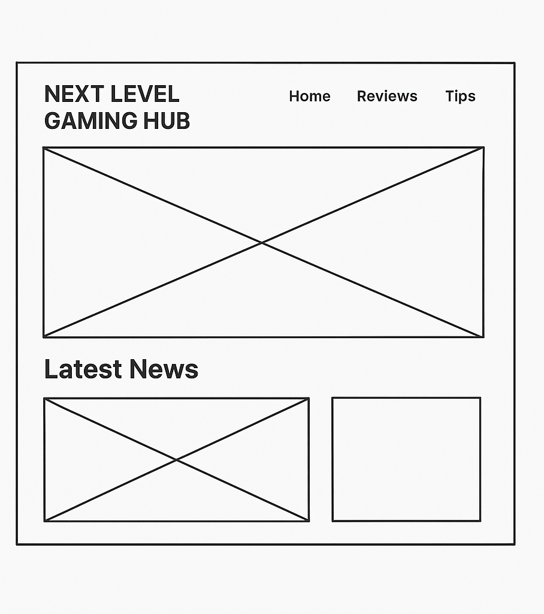

Site Name
FoodieFind — the name represents a place where visitors can discover delicious recipes, food inspiration, and cooking ideas all in one spot.
Purpose
The purpose of FoodieFind is to provide users with easy access to a variety of recipes, cooking tips, and meal inspiration. The site allows users to explore dishes, filter recipes by type, and learn new cooking techniques—all while enjoying a clean and visually appealing experience.
Audience
The site targets food lovers, home cooks, and anyone looking for simple yet creative meal ideas. Whether you're a beginner learning to cook or someone looking for fresh inspiration, FoodieFind is designed for you.
Branding & Visual Style
The FoodieFind identity focuses on warmth, freshness, and creativity. Orange tones express flavor and excitement, while the clean white background gives space for beautiful food photography to shine.
The design uses soft rounded corners and balanced typography to create a modern, friendly look suitable for food enthusiasts.
Style Guide
Color Palette
Primary: #FF6B35 | Accent: #F7C59F | Background: #fffaf8 | Text: #222
Typography
- Headings: Poppins, sans-serif
- Body: Open Sans, system-ui
Wireframes
Home Page (Desktop):
Home Page (Mobile):
Site Map / Pages
- index.html – Homepage featuring a hero section and featured recipes.
- recipes.html – Recipe Explorer with filters and sorting options.
- contact.html – Contact page with form, newsletter, and contact info.
Domain & Hosting
Domain Name: foodiefind.com
Hosting: GitHub Pages or Netlify for development and deployment.
Accessibility Features
- High contrast text and background for readability.
- ARIA labels for navigation and buttons.
- Responsive layout for desktop and mobile devices.